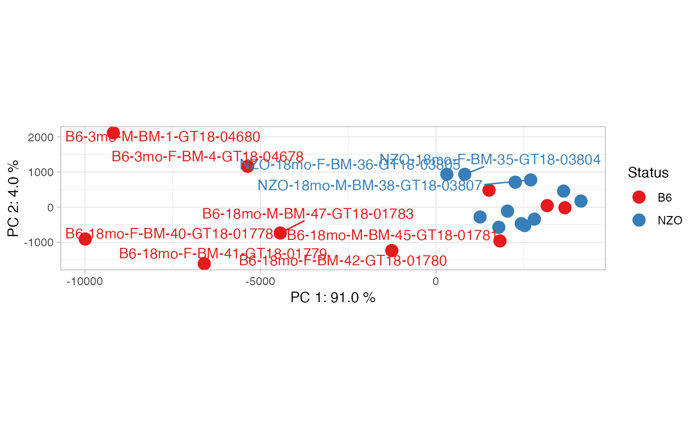

pca_plot
Examples
#' library(cinaR)
data(atac_seq_consensus_bm) # calls 'bed'
# creating dummy results
results <- NULL
results[["cp"]] <- bed[,c(4:25)]
# a vector for comparing the examples
contrasts <- sapply(strsplit(colnames(bed), split = "-", fixed = TRUE),
function(x){x[1]})[4:25]
## overlays the contrasts info onto PCA plots
pca_plot(results, contrasts)
#> Warning: ggrepel: 13 unlabeled data points (too many overlaps). Consider increasing max.overlaps

## you can overlay other information as well,
## as long as it is the same length with the
## number of samples.
sample.info <- c(rep("Group A", 11), rep("Group B", 11))
pca_plot(results, sample.info, show.names = FALSE)